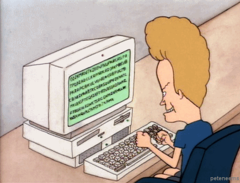

JS propaganda for java devs
Static Typing in vanilla.js
Not really...

What are the benefits of static typing?
- possibility for optimisation based on types
- potentially earlier detection of bugs
- easier for an IDE to infer + suggest
- automated documentation
breaking stuff is bad
what do we have?

+ @use JSDoc
=

demo

cheat sheet

@param {type} name // describe a parameter @optional // to say argument 'name' doesn't need to be defined @return {type} // define what a function should return (omit for void funcs) @const // declare that a value should not be reassigned to @deprecated // declare that a function shouldn't be used any more @constructor // declare constructor @interface // declare interface @implement name // declare implementing an interface @extends name // declare extending a class @param {String|Number} name // define a param as a String or number @param {{myNum: number, kitten: String}} config // define a param as obj literal @param {!Object} name // describe a parameter as being non-nullable object
moar reading
talk from jsconfeu 2013 - TBA
@vikkiread